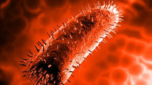
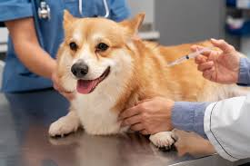
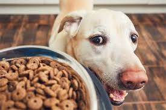
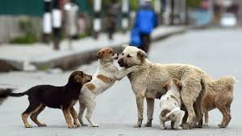
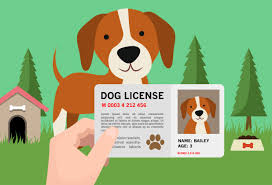
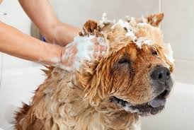

Rabies is a viral disease that affects the central nervous system, causing inflammation in the brain. Once symptoms appear, rabies is almost always fatal. In dogs, rabies can lead to severe behavioral changes, aggression, and eventual death. For humans, contracting rabies from a dog bite or scratch can be lethal if not treated immediately with post-exposure prophylaxis (PEP).
Vaccination is crucial for preventing many infectious diseases in dogs, including rabies, distemper, and parvovirus. Vaccines stimulate the immune system to produce antibodies, providing protection against specific infections. Regular vaccination not only keeps your dog healthy but also prevents the spread of diseases to other animals and humans.
Parvovirus: Highly contagious and often fatal, parvovirus attacks the gastrointestinal tract.
Distemper: A serious viral illness that affects the respiratory, gastrointestinal, and nervous systems.
Heartworm: Parasites transmitted by mosquitoes, causing severe lung disease and heart failure.
Leptospirosis: Bacterial infection that can lead to kidney and liver damage.
Canine Influenza: A contagious respiratory infection.
Good Signs: Wagging tail, relaxed body, playful behavior, and healthy appetite are indicators of a happy and healthy dog.
Bad Signs: Lethargy, loss of appetite, aggression, excessive scratching or licking, and changes in behavior can indicate health or emotional issues.
Feed: High-quality commercial dog food, lean meats, vegetables like carrots and green beans, and cooked rice or pasta.
Not to Feed: Chocolate, onions, garlic, grapes, raisins, and anything containing xylitol (a sugar substitute).
Stray dogs can make excellent pets when given the chance. They often display gratitude and loyalty towards their rescuers. However, strays may exhibit aggressive behavior due to fear, previous abuse, or territorial instincts. Proper training and socialization can help them adapt to a new home.
Licensing your dog is important for several reasons: it helps identify and return lost dogs, ensures dogs are vaccinated against rabies, and funds local animal control and shelter services. Licensing also indicates responsible pet ownership.
There are numerous dog breeds, each with unique characteristics and needs. Some popular breeds include:
Retriever: Friendly, outgoing, and high-energy.
German Shepherd: Intelligent, versatile, and protective.
Bulldog: Gentle, courageous, and loyal.
Poodle: Intelligent, active, and hypoallergenic.
Beagle: Curious, friendly, and good with children.

Proper grooming is essential for your dog's health and comfort, but it must be done carefully. Using the right products, avoiding sensitive areas, and being gentle can prevent skin irritations and injuries. Regular grooming helps detect any health issues early.
Puppies require special care, including a balanced diet, regular veterinary check-ups, and proper socialization. Provide them with a safe, clean environment, plenty of playtime, and lots of love and attention. Early training and socialization are crucial for their development.